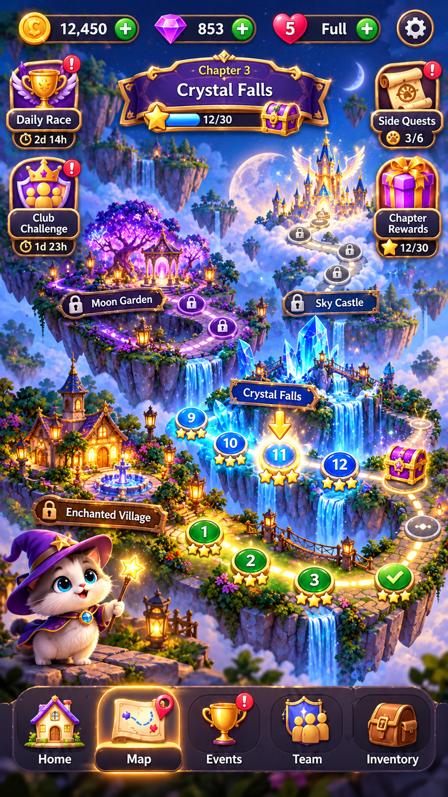
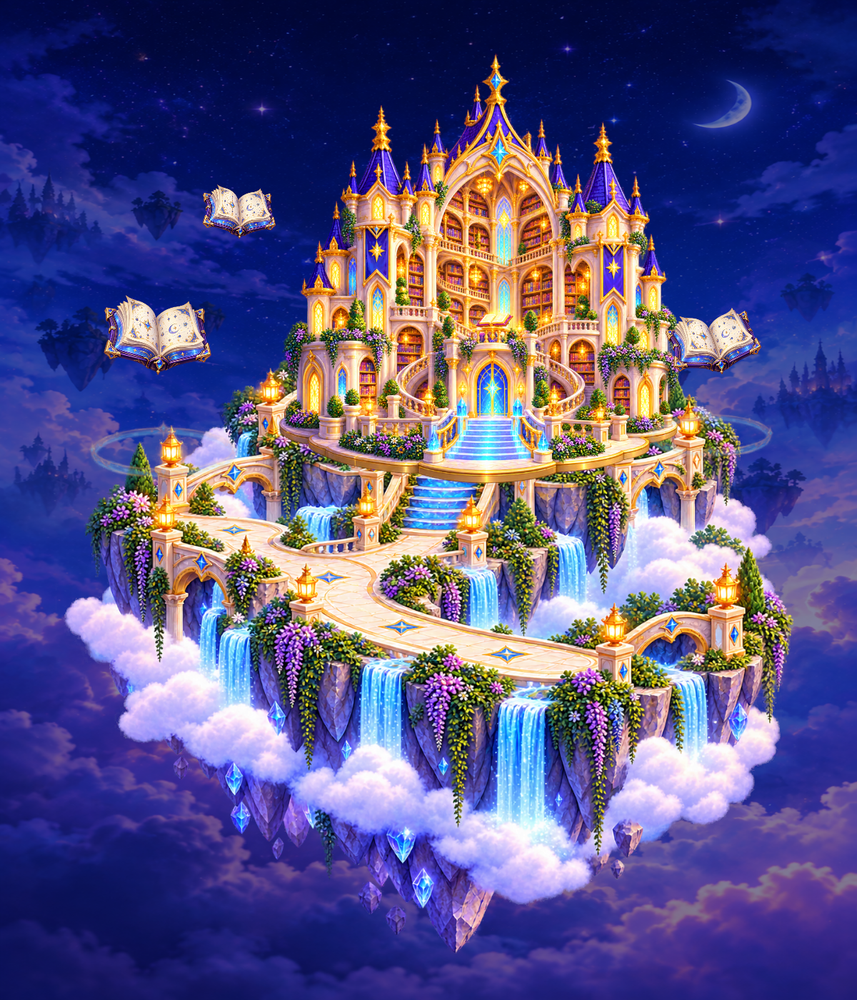
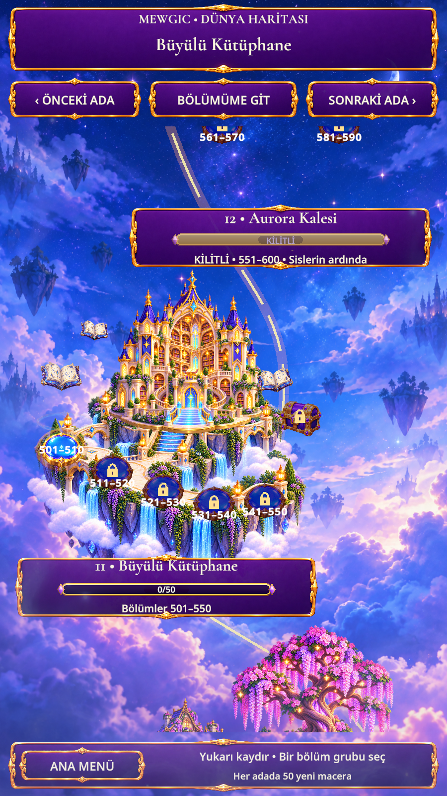

Gerçek proje referansı ve gerçek Unity çıktıları. Bulutlu uçan ada, ayrı mor-altın akademi, açık salon içinde büyük kitap rafları, kristal merdiven, yıldızlı geçit,3 bağımsız süzülen kitap ve2 ince sihir halkası.



Yumuşak3D illüstrasyon, mor/mavi çatılar, altın pencere ışığı, kitaplık salonu ve uçan kaya/bulut derinliği referansla karşılaştırıldı. Kitaplar ayrı sprite/transform, halka ayrı düşük alpha Image; raflardaki küçük kitaplar mimariye bake edilmiştir. Sayfa/rig/3D fizik animasyonu veya yeni mekanik yoktur. Küçük su/bulut/fener ayrıntıları tabanda statiktir; bu partta akarsu simülasyonu eklenmedi. Mevcut beş onluk grup ve bölüm seçicisi korunur;03_Map'in tekil yol düzeni piksel kopyası değildir. İsim paneli kayanın altını kısmen örter.
9:19.5 · 9:20 + Safe Area · Bölüm seçicisi · 550→551 Gameplay · Teknik rapor